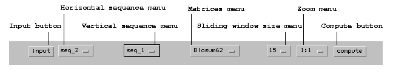
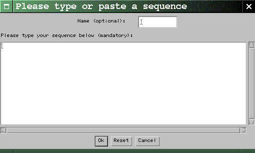
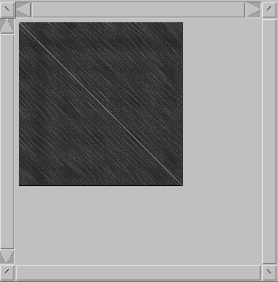
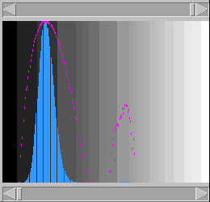
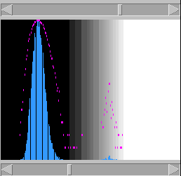
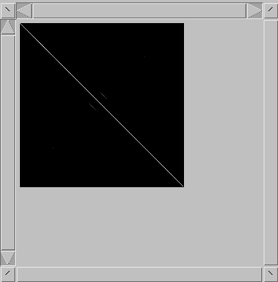
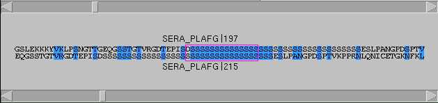

This page explains how to use the
dotletprogram. For a quick summary of
dotlet's less obvious commands, see the command summary page. There is
also an examples page that
shows you the kind of features that can be discovered
with this program.
Since this program runs on many platforms, your screen
may be a bit different from the screenshots shown below
(which implements the Java look-and-feel). Don't worry,
the program works in the same way everywhere (well,
at least it should :-).
The basic procedure
First of all, here's a presentation of dotlet's menu bar:
Figure 1: The dotlet menu bar

The basic procedure has the following steps:
Click on the Input
button. This opens the Sequence Input
Dialog:
Figure 2: The Sequence Input Dialog

Now type or paste a sequence in the dialog's
main text area. You can give your sequence a
name if you wish (use the Name
textfield for this); if you don't, dotlet
will create one for you. When you're done,
click the Ok button. Characters
other than letters are ignored, so it is ok
to cut-and-paste a sequence that has spaces
or position numbers in it. Case is not
important. Once the sequence has been input,
there is no way to modify it. If you need to
enter a second
sequence, repeat this step. Notice how the
sequence menus reflect the
name(s) of the sequence(s) you entered, or the
automatically attributed name(s) if you didn't
name your sequence(s).
Select the horizontal sequence from the
first sequence menu, and the vertical sequence
(which can be the same as the horizontal one)
from the second sequence menu. If you want to use
another matrix than the default, you may do so
from the matrices menu. The program automatically
determines if a sequence is protein or nucleic
acid, and offers a choice of adequate
matrices. Similarly, you can select a zoom
factor and the sliding window's size from the
corresponding menus.
Click the Compute
button. After a while (this depends on the
speed and load of your computer, as well as on
the lengths of the sequences), the dots
window will display the diagonal plot. It
looks like this:
Figure 3: The Dots window, with no grayscale adjustments

Each pixel corresponds to a residue in the
horizontal sequence, and another residue in the
vertical sequence. The pixel's color depends on
how similar the two sequences are around these
two positions: each pixel represents a score,
with high scores meaning good matches (in
this case, the darker the pixel, the lower the
score). Obviously
there will be a large number of pixels with low
scores and only a few ones with high scores.
It is likely that you will have to tune the
grayscale in order to make the background noise (low scores)
disappear and the similar regions stand out
more clearly (the image shown in Fig. 3 has quite a bit of
background). To do this, use the histogram
window (Fig. 4):
Figure 4: The Histogram window, unadjusted

Figure 5: The Histogram window, after adjusting the grayscale

This represents the frequency of each score,
over all the pixels, on
linear (blue) and logarithmic (purple) scales;
with the lowest possible score on the left and
the highest on the right. The large peak on the
left corresponds to the majority of pixels with
low scores. If the sequences have some similarity
(as is the case here), there will also be a
smaller peak of higher scores. Sometimes the
proportion of high-scoring pixels to the noise
will be so low that the peak will be barely, if
at all, perceptible on the linear scale. Hence
the use of the semi-logarithmic plot.
With the scrollbars below and above the histogram,
respectively, bring the lower threshold just
past the first peak, and the higher threshold
just past the second peak (Fig. 5).
Now, the background noise has disappeared from
the dots window, and the similar regions stand
out more clearly (Fig. 6):
Figure 6: The Dots window, after adjusting the grayscale

That's it.
If your sequences are too long for the dot
window, you have two options. First, you can choose a
smaller zoom factor (use the zoom factor menu). You'll
have to start the computation anew. Alternatively, you
can move around the dot window by using its vertical
and horizontal scrollbars. At the corners of the zoom
window are four buttons, with which you can slide the
display diagonally.
If you wish to inspect the alignment at some spot,
click on the corresponding pixel in the dot window. A
cursor (blue cross) will appear, and
the alignment window will display the
sequences around the cursor's positions (Fig. 7).
Figure 7: The Alignments window

Residues that
match well (according to the matrix) are colored in
blue. The comparison window is highlighted by a purple box.
The cursor can be dragged around (if you try to drag it
beyond the edges of the dot window, the whole display
will scroll instead). The alignment window's scrollbars
have the same function. The cursor can also be moved with the
keyboard with the arrow keys, and with '<'
(up left), '>' (down right), '['
(up right), and ']' (down left). When the
display is zoomed, the cursor will not be updated at
every keystroke, but the alignment window will.
Beyond the basics
When comparing nucleic acid to nucleic acid, in addition
to comparing the sequences the usual way, dotlet
will reverse complement one of the sequences and perform
a second comparison. Each pixel is set to the best of
these two scores. This enables to see structures like
stem-loops, for example. The alignment window will also
display the reverse complemented sequence.
It is also possible to compare a protein to a nucleic
acid sequence (but not the reverse - yet). In this case
the nucleic acid sequence is translated in the three
forward frames, the comparison is performed for each
frame, and the pixels are set to the highest of the
three scores. The alignment window also displays the
three translated frames. This is useful for finding
frameshifts or exons (although the latter can be done
by comparing gene and mRNA). See the examples page for more.
Marco
PagniThomas
Junier
Last modified: Tue Jul 13, 1999